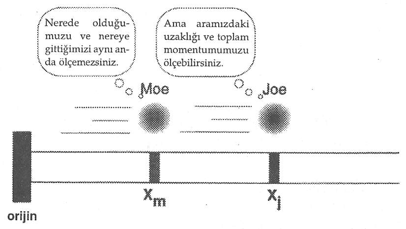
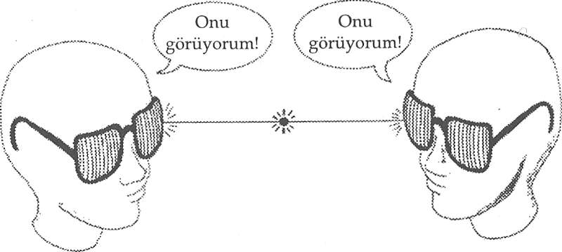
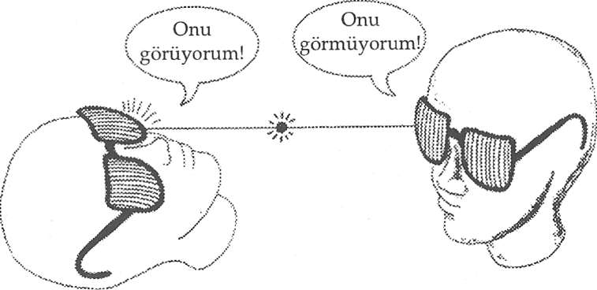
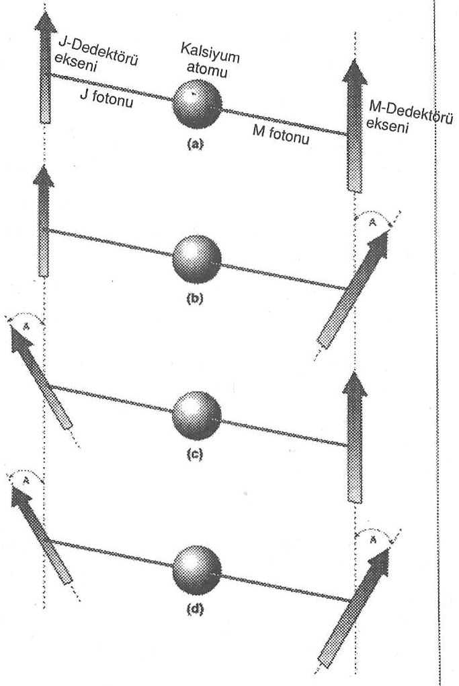

Henüz en önemli soruyla, "Şuur nedir? Kişi, şuur ve farkındalık arasında nasıl ayrım yapar?" sorusuyla yüzleşme- dik.
Heyhat, şuurun tanımı kolay değildir. İngilizcede consciousness (şuur) iki kelimeden türemiştir: Bilmek anlamına gelen Latince scire fiili ve ile anlamına gelen Latince cum edatından. Demek ki şuur, İngilizcede etimolojik olarak "ile bilmek" anlamına gelmektedir.
Oxford İngilizce Sözlüğü'nde consciousness kelimesinin bir değil altı tanımı vardır:
Bu tanımların hiçbirisi tam olarak tatmin edici değildir ama hepsi bir arada düşünüldüğünde, şuurun ne olduğuna dair yaklaşık bir anlayış sağlamaktalar. Bu farklı tanımlardan her birinin işe dahil olduğu bir durum hayal edin. (l'den 6'ya dek her tanıma bir numara vereceğiz.) Size bir buket gül gönderilir. Buketi getiren adam, siz ve gönderen kişi, hediye güller bakımından şuur[l] paylaşmaktasınızdır. Güllerin ve size verilen bir hediye olarak anlamının geçmişini, çağrışımlarını ve eşlikçilerini biliyor oluşunuzun şuurundasınız[2] (ve bu şuurla, hediyeyi takdir edebilir ya da etmeyebilirsiniz). Gülleri duyularınızla deneyimleyişiniz şuurunuzda[3] yer eder; onların kokusunu koklamakta, rengini görmekte ve dikenlerini hissedebilmektesinizdir. Ancak hediyeyle bağlantılı anlamlar veren, ilişkileri düşünen ve (örneğin gülleri kabul etmek ya da etmemek gibi) seçimleri yapan sizin şuurunuz- dur[4]. Şuurunuz [5] sizi kendine özgü, sevgilinizden ve hediye güllere bir biçimde tepki veren diğer herkesten ayrı olarak siz yapan şeydir. Ancak şuurlu oluşunuzdan[6] dolayı gülleri kabul edebilir ya da önceki şuur hallerini deneyimleyebilir veya sergileyebilirsiniz.
Kelimenin böyle analiz edilmesi bile pek çok anlamı dışarıda bırakmaktadır. Şuur dört farklı unsura sahiptir. İlk önce, bazen zihin alanı ya da küresel çalışma alanı denilen şuur alanı vardır. Farkındalık dediğim şey budur. İkinci olarak, bu alanda doğan ve geçip giden düşünceler ve duygular gibi şuur nesneleri vardır. Üçüncü olarak, bir şuur öznesi, yani deneyimleyen ve/veya şahit vardır. (Sözlükteki tanımlar aslında şuur öznesi ya da özdeşleştiğimiz şuurlu ben hakkındadır). Dördüncü olarak, idealist felsefede, şuurdan tüm varlığın temeli olarak söz ederiz.Şuurun sağduyulu bir tanımı, onu şuurlu deneyimle eşitler. Bir şuur öznesinden, deneyimden söz etmeksizin bahsetmek, balesiz bir bale sahnesinden söz etmeye benzer. Şuurlu deneyim kavramının, uyanık şuur haliyle sınırlı olmadığına dikkat edin. Rüya görmek, uyanıklık halinden farklı olmasına karşın şuurlu bir deneyimdir. Meditasyonda, ilaç etkisi altında, ipnotik transta deneyimlediğimiz hallerin hepsi de şuurluluk içeren deneyimlerin değişmiş halleridir.
Sağduyu bize ayrıca şuurlu deneyimin, bazısı içsel bazısı dışsal birçok eşlikçiyle geldiğini de söylemektedir. Örneğin ben bu sayfayı yazarken, parmaklarım daktilonun tuşlarına vururken zihnimi seyrediyorum. Düşünüyorum: Sayfa iyi oluyor mu? Şu cümleyi tekrar yazsam mı? Çok mu az açıklıyorum yoksa çok mu fazla? Ve şimdi çalışma odamın kapısına vurulduğunu duyuyorum. "Kim o?" diye sesleniyorum. Cevap yok. Bir seçim yapmalıyım. Ya bu kez daha yüksek sesle bağıracağım ya da kalkıp kapıyı açacağım.
Şimdi, dışsal eşlikçiler basittir. Kendimi parmaklarımla özdeşleştiremem, onlar şu sayfayı yazmak gibi değer verdiğim şeylerle meşgul olduklarında bile. Çok azımız şuuru duyumlarla, duyusal izlenimlerle ya da reflekslerle bir tutmayı düşünürüz. "Ben, kapıya doğru yürüyüşümüm," dediğinizi hayal edebiliyor musunuz? Şüphesiz edemezsiniz. Sağduyu bize bir şuurlu deneyimin dışsal eşlikçilerinin, şuurun temel öğeleri olmadıklarını söylemektedir.
İş, zihnin içsel malzemesine -düşüncelere, seçimlere vb.- geldiğinde, mesele daha az net hale gelir. Örneğin, birçok kişi -Descartes'ın izinden giderek- kendilerini düşünceleriyle özdeşleştirirler: Düşünüyorum, öyleyse varım. Bazıları için, şuurlu olmak duyuyla eş anlamlıdır. Hissediyorum, öyleyse varım. Bazılarımız kendilerini seçme yeteneğiyle bile özdeş- leştirebilir. Örneğin Nietzsche varlık ve iradeyi eş tutar.
Bilim sağduyusuzdur. Sağduyu işe yaramadığında, bilime sığınırız. Ancak psikolojiye sığınınak yardımcı olmaz.
Önde gelen bilişselci (kognitivist) Ulric Neissefin dediği gibi: "Psikoloji, şuur meselesini ele almaya hazır değildir." Neyse ki, fizik hazır. Bu, daha işin başında şuur tartışmasını doğuran kuantum teorisi ve ölçüm problemine dönmek anlamına geliyor.
Schrödinger’in kedisi paradoksunun idealist çözümü, gözlemleyen öznenin şuurunun kedinin çok yüzlü ölü-ve-diri tutarlı süperpozisyonlarından birini seçmesini ve böylece kaderini belirlemesini talep eder. Özne, seçendir. Descartes’in düşündüğü gibi cogito, ergo sum değil opto, ergo sum: Seçiyorum, öyleyse varım.
Zihin ve zihnin yasaları gecenin içinde saklıydı.
Tanrı, "Descartes olsun," dedi, gece aydınlandı.
Çok sürmedi. Şeytan bağırdı: "Hey!
İşte Schrödinger'in kedisi! Döndürün statükoyu eski haline."
(Papa'ya özürlerimizi sunuyoruz.)
Biliyorum, klasik fiziğe sadakatle bağlı olanlar başlarını olumsuz anlamda sallayacaklar çünkü deterministik dünyamızda seçme özgürlüğü ya da hür irade olmadığını düşünüyorlar. Klasik determinizm varsayımları yüzünden, bizleri maddesel makineler olduğumuza inanmaya koşullandırmaya kalkıştılar. Şartlanmamızı kısa bir süre için askıya aldığımızı varsayalım. Ne de olsa, Schrödinger'in kedisi paradoksunu hipotezlerimizle çözdük.Aynı araştırma ruhuyla soralım, sonra ne olur? Cevap olarak, bir kapı açılır. Düşünceler ve duygular bizleri ne kadar esir etmişse; bunlar da, o kadar eski, sabit, öğrenilmiş bağlamlardan türemişlerdir. Aynısı hür irade için de geçerli midir? Seçimlerimiz, eylemlerimiz için bağlam oluştururlar; demek ki biz seçtiğimizde yeni bir bağlam olasılığı doğmaktadır. Bizi seçimimizde özgür kılan şey, işte bu eski bağlamdan dışarıya, daha yüksekteki yeni bir bağlamın içine atlayabilme olasılığıdır.
Bu türden bir durumu özellikle tarif etmek için belirgin bir dil geliştirilmiştir: bağlama göre sıralanmış düzeylerin hiyerarşik doğası. Mantıksal tipler teorisi diye bilinen bu dil, ilk başta takım teorisinde doğan sorunları çözmek üzere Bertrand Russell tarafından geliştirilmişti. Russell'ın temel fikri, takımın üyelerinin oluşturduğu bir takımın, üyelerin kendilerinden daha yüksek bir mantık türünde olduğu şeklindedir çünkü söz konusu takım, üyeler için düşünce bağlamı tanımlar. Benzer şekilde, bir şeyin tarif ettiği şeyin bağlamını resmeden ismi, o şeyin kendisinden daha yüksek bir mantık türündendir. Demek ki şuurlu deneyimin üç içsel eşlikçisi içinde, seçim öne çıkmaktadır. Seçim, düşünceler ve duygulardan daha yüksek bir mantık türüdür.
O zaman, seçtiğimiz deneyimlerin şuuruna varmamızı sağlayan seçme kapasitemiz midir? Her an, kelimenin tam anlamıyla sayısız olasılıkla yüzleşiriz. Bunların arasından seçim yaparız ve biz seçtikçe, oluşumuzun rotasını tanırız. Demek ki seçişimiz ve seçimi tanıyışımız, benliğimizi tanımlamaktadır. Kendinin şuurunda olmanın asli meselesi, seçmek ya da seçmemektir.
Seçimin, kendinin şuurunda oluşun tanımlayıcı eşlikçisi olması fikri, deneylerle de desteklenmiştir. Bilişsel bilimdeki deneylerden gelen veriler, uyartıların şuursuz algılanmasına tepki olarak seçimlerin değil de düşünce ve duyguların doğduklarını işaret etmektedir.
Verilere göre, ki bunları bir sonraki bölümde ele alacağız, şuurlu -özneler olarak farkındalık- la- davranmadığımız takdirde seçim yapmıyor gibi görünmekteyiz.
Bu durum, farkında olunmayan eylemin, yani şuursuzluk kavramının ne anlama geldiği sorusunu doğurur. Şuurdışılık nedir? Şuursuzluk (ya da şuurdışı hal), şuurun olduğu ama farkındalığın olmadığı haldir. Burada bir paradoks olmadığına dikkat edin çünkü idealizm felsefesinde şuur tüm varlığın temelidir. Her zaman ve her yerde mevcuttur; biz şuursuz bir halde olduğumuzda bile.
Şuurdışı algılama terimiyle ilgili karmaşanın bir bölümü, terimin etimolojisindeki tarihsel özel durumlardan doğmaktadır. Çoğu zaman bazı şeylerin ve rüyasız uyku halindeyken de hiçbir şeyin farkında olmayan bizim şuurlu benimizdir. Ancak tam tersine, şuurdışı her zaman her şeyin farkınday- mış görünmektedir. O asla uyumaz. Bu şu anlama gelir: Şuurlu benliğimiz şuurdışılığımızın farkında değildir ve şuurdışı şuurludur; iki ters terim birden kullandık. Bu nokta üstünde daha ayrıntılı durmak isteyenlere Daniel Goleman'ın Vital Lies, Simple Truths (Hayati Yalanlar, Basit Gerçekler) adlı kitabını okumalarını öneririm.
Demek ki şuursuz algılamadan söz ettiğimizde, algıladığımız ama algıladığımızın farkına varmadığımız olaylardan söz etmekteyiz.
Kulağa garip geldiğini biliyorum. Şuurdışı algılama diye bir fenomen nasıl olabilir? Algılama, farkındalık ile eşanlamlı değil midir? Oxford İngilizce Sözlüğü'nün yazarları anlaşılan öyle düşünüyorlar. Ama yine de, bilişsel laboratuvarla- rından gelen yeni veriler iki kavram -algılama ve farkındalık- arasında bir fark olduğunu göstermektedir.İlk deneyde iki maymun vardı. Nick Humphrey ve Le- wis Weiskrantz adlı araştırmacılar, maymunların görme ile ilişkili beyin kabuğu bölümlerini çıkartmışlardı. Beyin kabuğu dokusu tekrar oluşmadığından, bu maymunların kalıcı biçimde kör olmaları bekleniyordu. Ancak, görme yeteneklerini yavaş yavaş, maymunların görebildiklerine araştırmacıları ikna etmeye yetecek kadar geri kazandılar.
Bu maymunlardan biri olan Helen sık sık tasma takılarak dışarıya çıkartılıyordu. Maymun, kör olması gereken bir yaratık için sıra dışı denecek şeyleri yapmayı yavaş yavaş öğrendi. Örneğin, ağaçlara tırmanıyordu. Ayrıca uzanıp kapabileceği kadar yakma getirildiğinde kendisine uzatılan yiyecekleri alıyor ama erişemeyeceği kadar uzaktaysa umursamıyordu. Helen'in görüyor olduğu açıktı, ama neyle görüyordu?
Arka beyindeki görme yoluna bağlanan üst tepecik (superior colliculus) denilen bir yapıyla retina arasında optik uyartı için ikinci bir yol daha olduğu ortaya çıktı. Bu tepecik sayesinde oluşan görme, Helen'in araştırmacıların körgörüş2 dedikleri şeyle görmesini sağlıyordu.
Şans eseri, Nick Humphrey körgörüşe sahip bir insan deneğe rastlamıştı.3 Bu adamın beyin kabuğundaki bir bozukluk her iki gözünün sol görüş alanında körleşmesine neden olmuştu. Artık deneyciler, denek körgörüşün izin verdiği belirli işleri yerine getirirken deneğe şuurunda neler olduğunu sorabilmekteydiler. Cevaplar pek garipti.
Örneğin, eğer adama kör olduğu taraf olan soldaki bir ışık gösterilirse, doğru biçimde onu işaret edebilmekteydi. Ayrıca hepsi de sol görüş alanının artı işaretlerini dairelerden, yatay çizgileri dikey çizgilerden ayırt edebiliyordu. Ama bunları nasıl gördüğü sorulduğunda, adam görmediğinde ısrar ediyordu. Sadece tahmin ettiğini söylüyordu ama doğruluk oranı şansa bağlanamayacak kadar yüksekti.
Tüm bunların anlamı nedir? Artık bilişsel bilimciler arasında körgörüşün şuursuz algılamanın -farkında olmadan algılamanın- bir örneği olduğuna dair fikir birliği var. Görüyorsunuz ya, algılama ve farkındalığın iç içe geçmiş olması şart değil.
Şuursuz algılamayla ilgili daha ileri fizyolojik ve bilişsel kanıtlar Amerika ve Rusya'da yapılan araştırmalardan geldi.4 Araştırmacılar çeşitli deneklerin beyinlerinde şuuraltıyla algılanan birçok mesaja verilen elektrik tepkileri ölçmüşlerdi. Tepkiler, soyut geometrik bir şekil gibi daha nötr bir resme göre, ekranda saniyenin binde birinde yanıp sönen bir arınınki gibi anlamlı bir resim görüldüğünde daha güçlüydü. (Anlaşılan, test grubunda matematikçiler yoktu.) Dahası, deneklerden şuuraltıyla algılanan bu resimlerden sonra akıllarına gelen tüm kelimeleri araştırmacılara söylemeleri istendiğinde, anlamlı bir resmin, kendisiyle ilişkili olduğu açık olan kelimeler ortaya çıkardığı görülüyordu. Örneğin, arının resmi iğne ve bal gibi kelimeler çağrıştırmaktaydı. Tersine, geometrik bir figür nesnelerle ilgili bir şeyi zorlukla çağrıştırmaktaydı. Arı resminin algılandığı ama bu algılamaya dair şuurlu farkındalığın olmadığı açıktı.
Bu deneyler popüler basında, Sigmund Freud'un yüzyılın başında bilim dünyasını şaşırtan şuurdışı kavramının deneysel kanıtları olarak ele alındı. Ama bizdeki şuurdışı nedir? Şuurdışı, (varlığın temeli olarak) şuurun olduğu ama farkındalığın ve öznenin olmadığı haldir. Demek ki şuursuz algılamada, algıladığımız (yani içeriye uyartı olarak alman ve işlenen olaylar) ama algıladığımızın farkında olmadığımız olaylardan söz etmekteyizdir. Tam tersine, şuurlu algılama uyartıları içeri almayı, işlemeyi ve algılamanın farkına varılmasını içermektedir.
Şuursuz algılama fenomeni, önemli bir soru doğurur: Şuurlu deneyin üç eşlikçisinden (düşünce, duygu ve seçme) herhangi biri şuursuz algılamada mevcut değil midir? Şuuraltıyla algılanan mesajlarla ilgili deney, düşüncenin mevcut olduğunu önermektedir: Denekler iğne ve bal gibi kelimeleri, bir arı resmini şuursuz algılamalarının sonucu olarak düşünmüşlerdir. Şuurdışımızda bile hemen düşünmeye başladığımız ve şuurdışı düşüncelerin şuurlu düşüncelerimizi etkilediği açıkça görülmektedir.
Hissetme bakımından, beyin yarıküreleri ameliyatla ayrılmış hastalarla yapılan bir deney önemli kanıtlar ortaya çıkarmıştır. Bu deneklerde, beynin sağ ve sol yarıküreleri; duygularla ve hislerle ilgili arka beyin merkezlerindeki çapraz bağlar dışında ameliyatla birbirinden ayrılmıştır. Bir kadın deneğin sağ yarıküresine yansıtılan geometrik şekiller dizisi sırasında çıplak bir erkek modelin resmi geçtiğinde, kadının yüzü kızararak utanma belirtisi göstermişti. Ancak bunun sebebi sorulduğunda, kadın utandığını inkar etmişti. İçindeki bu hislere dair şuurlu bir farkındalığa sahip değildi ve niçin kızardığını açıklayamamıştı.5 Demek ki şuursuz algılama sırasında hissediş mevcuttur ve şuursuz hissetme, açıklanamayan şuurlu bir his üretebilir.
Son olarak, acaba seçme de şuursuz algılamada oluşmakta mıdır? Bunu bulmak için, beyin-zihne muğlak bir uyartı yollamalıyız ki tepkiler içinden seçim yapma durumu oluşsun. İlgili bir bilişsel deneyde, psikolog Tony Marcel çoğul anlamlı kelimeler kullandı. Denekleri, aralarında ya 600 milisaniye ya da 1,5 saniye olan aralıklarla her seferinde üç kelimelik bir dizinin yanıp söndüğü bir perdeyi seyrediyorlardı.6 Daha sonra deneklerden, dizinin son kelimesini şuurlu olarak tanırlarsa, bir düğmeye basmaları isteniyordu. Deneyin amacı, deneklerin tepki verme zamanını, kümes-kaz- yumurta (uyumlu), kaşık-kümes-yumurta (tarafsız), kuyu- kaz-yumurta (uyumsuz) ve kaşık-top-yumurta (çağrışımsız) gibi dizilerdeki kelimeler arası uygunluk (ya da uygunluk eksikliği) ile kelimelere anlam atfetme arasındaki ilişki için ölçü olarak kullanmaktı. Örneğin, kaz kelimesini takiben yanıp sönen kümes kelimesinin oluşturacağı peşin hükmün, kaz kelimesinin bir kümes hayvanı ile ilgili anlamını güçlendirmesi ve bunun da deneğin üçüncü kelime olan yumurta'yı (uyumlu) tanımayla ilgili tepki süresini kısaltması beklenebilir. Eğer peşin hüküm kelimesi kuyu idiyse, o zaman kaz'ın kuyu kazmaktaki sözlük anlamı affedilmelidir ve üçüncü kelime olan yumurta'nın anlamının tanıması çok daha uzun zaman almalıdır (uyumsuz). Gerçekten de, sonuç buydu.*
* Tony Marcel bu deneyde hand-palm-wrist (uyumlu), clock-palm-wrist (tarafsız), tree-palm-wrist (uyumsuz) ve clock-ball-wrist (çağrışımsız) tarzında kelime grupları kullanmış ve İngilizcede hem "avuç içi" hem de "palmiye" anlamına gelen palm kelimesini uyumlu ve uyumsuz kelime grupları arasındaki ortak kelime olarak seçmiş.
Psikologlarımızın daha iyi Türkçe örnekler bulabileceğini ve gelecek baskılarda düzeltmek üzere yayınevimize ileteceklerini ümit ediyoruz. Ç.N.
Ancak ortadaki kelime, deneğin bunu şuurlu değil de şuursuzca görebileceği şekilde bir desen ile gizlendiğinde, uyumlu ve uyumsuz durumlar arasındaki tepki zamanında saptanabilir bir farklılık oluşmuyordu. Bu şaşırtıcıdır çünkü muğlak kelimelerin her iki anlamının da, peşin hüküm bağlamına bakılmaksızın kişi için bilinebilir olduğu varsayılmaktadır; ancak her iki anlam da biri diğerinden belirgin biçimde fazla seçilmemiştir. Görünen o ki, seçme, şuurlu deneyimin bir eşlikçisi iken şuursuz algılamanın eşlikçisi değildir. Özne-şuurumuz bir seçim yapıldığında ortaya çıkar: Seçiyoruz, öyleyse varız.
Bu oldukça akla yatkın. Seçmediğimizde, kendi algılamalarımızı sahiplenmeyiz. Böylece körgörüşlü adam da bir engele çarpmaktan kaçındığında bir şeyler gördüğünü inkar etmektedir. Beyin kabuğu ameliyatla ayrılmış olan kadın kızarmakta ama utanç hissettiğini inkar etmektedir.Belki de şuuru açıklamaya bilişsel psikoloji yardım edebilir; özellikle de kuantum teorisinin özne/benlik'ine dayanan fikirleri test etmek için kullanılabilirse. Hem kuantum teorisi hem de bu bilişsel deneyler, Batı geleneğinin asli insan deneyimi olarak seçme özgürlüğüne yaptığı vurgulamanın bilimsel bir temeli olduğunu göstermektedir.
Eğer Marcel'in deneyindeki kuantum açıklaması doğru ise, o zaman deney, beyin-zihinlerimizde tutarlı süperpozis- yonların varlığını dolaylı olarak göstermektedir. Seçmeden önce, beyin-zihin hali muğlak bir haldir; tıpkı Schrödingeı'in kedisininki gibi. Çoğul anlamlı bir kelimeye tepki olarak, beyin-zihin hali iki halin tutarlı süperpozisyona dönüşür. Her biri kat'ın farklı bir anlamına karşılık gelir:
Hayvan veya kazma eylemi. Çökme, bu hallerden birini seçmeyi içerir. (Şartlanma sebebiyle bir anlama daha çok meyletme görülebilir. Örneğin, hiç çiftlik hayatı yaşamamış biri kaz'ın kümes hayvanı olarak yetiştirildiğini bilmiyor olabilir ve kaz'ın kazma eylemini içeren anlamını seçme eğiliminde olabilir. Bu durumda, iki ihtimalin olasılık ağırlığı eşit olmaz, meyledilen anlamın lehine olurdu. Ancak diğer anlam için sıfır-olmayan bir olasılık mevcut olurdu ve seçme hala söz konusu olurdu.)**
* * Deneyin orijinalinde uyumlu ve uyumsuz kelime grupları arasındaki ortak kelime olarak kullanılan palm kelimesinin ağaç anlamına meyledilmesi olasılığı, kitabın orijinalinde "palmiye ağaçlarının çok sık görüldüğü California bölgesinde yetişen kişilerde az da olsa görülebilir," diye geçmektedir. Ç.N.
Seçiyorum, öyleyse varım. Unutmayın ki kuantum teorisinde, seçen özne tekil, evrensel bir öznedir, bizim kişisel egomuz değildir. Dahası, sonraki bölümde tartışılacak olan bir deney bu seçen şuurun ayrıca mekansız olduğunu da göstermektedir.
EINSTEIN - PODOLSKY - ROSEN PARADOKSU
Kuantum çökmesinin idealist senaryosu, şuurun mekansız oluşu üstünde durmaktadır. Demek ki mekansızlığın herhangi deneysel bir kanıtı olup olmadığını sormamız gerek. Şanslıyız. 1982'de Alain Aspect ve Paris-Sud Üniversitesindeki meslektaşları kuantum mekansızlığım kesin biçimde gösteren bir deney yürüttü.
1930'larda Einstein, kuantum mekaniğinin tamamlanmamış olduğunu kanıtlamak ve realizm için destek sağlamak amacıyla artık EPR Paradoksu diye bilinen bir paradoks türetilmesine yardım etmişti. Einstein'ın felsefi eğilimleri düşünüldüğünde, EPR'nin pekala Einstein için Realizmin Korunumu olabileceği düşünülebilir. Komik olan, paradoksun bir bumerang gibi realizme, en azından materyalist realizme geri dönmüş olmasıydı ve Aspect'nin deneyi de bu geri dönüş kısmını oluşturmaktadır.
Heisenberg'in belirsizlik ilkesini hatırlayın: Belirli bir zamanda iki tamamlayıcı değişkenden, konum ve momentum- dan sadece biri mutlak kesinlikle ölçülebilir. Bu, bir kuantum nesnesinin yörüngesini asla tahmin edemeyeceğimiz anlamına gelir. Boris Podolsky ve Nathan Rosen (yani EPR'nin P ve R'si) adlı meslektaşlarıyla Einstein bu tahmin edilemezlikle çelişiyor gibi görünen bir senaryo kurmuştu.1

Şekil 29. Joe ve Moe'nun EPR bağlantısı. Aralarındaki uzaklık XJ – XM her zaman aynıdır ve toplam momentumları ise her zaman Pj + PM'dir.
Joe ve Moe adını vereceğim iki elektronun birbiriyle bir süre etkileşimde bulunduğunu ve sonra etkileşmeyi kestiğini hayal edin. Bu elektronlar, şüphesiz, tıpatıp ikizlerdir çünkü elektronlar birbirlerinden ayırt edilemezler. Varsayalım ki, Joe ve Moe'nun kendi aralarında etkileşirken belirli bir eksendeki bir orijinden uzaklıkları, sırasıyla XJ ve XM olsun (Şekil 29). Elektronlar hareket etmektedir, dolayısıyla momentuma sahiptirler. Bu momentuma (aynı eksen boyunca) PJ ve PM adını verebiliriz. Kuantum mekaniği, belirsizlik ilkesi sebebiyle hem PJ ve hem de XJ i veya hem PM ve hem de XM 'i aynı anda ölçemeyeceğimizi söylemektedir. Fakat onların birbirlerinden uzaklıklarını X (X = XJ - XM) ve toplam momentumlarını P (P = PJ + PM) aynı anda ölçmemize izin vermektedir.
Einstein, Podolsky ve Rosen'e göre Joe ve Moe etkileş- tiklerinde bağlantılı hale gelmişlerdir çünkü daha sonra etkileşmeyi kestiklerinde, Joe'nun konumunu (XJ) ölçmek; Moe'nun tam olarak nerede olduğunu (XM 'in değerini) hesaplamamızı sağlamaktadır (çünkü XM = XJ - X'tir, X onlar arasındaki bilinen uzaklıktır). Eğer PJ yi (Joe'nun momentumunu) ölçersek, PM (Moe'nun momentumunu) belirleyebiliriz çünkü PM = P - PJ 'dir, P ise bilinmektedir. Ancak eğer Joe üstündeki ölçümlerimizi Moe'nun artık onunla etkileşmediği zamanda yapıyorsak, bu ölçümlerin Moe üstünde herhangi bir etkisi olması imkansızdır. Demek ki Moe'nun konumu ve momentumunu gösteren değerler eşzamanlı olarak erişilebilir olmalıdır.
EPR, bağlantılı bir kuantum nesnesi (Moe) hem konum hem de momentum değerlerine aynı anda sahip olmalıdır, diye sonuca vardı. Bu gözlem realizmi destekliyordu çünkü ilkesel olarak, artık Moe'nun hareket yörüngesini belirleyebiliyorduk. Bu durum kuantum mekaniği ile ciddi biçimde çelişkili görünmekteydi çünkü kuantum mekaniği, bir kuantum nesnesinin yörüngesini hesaplamanın imkansız olduğunu çünkü bir yörüngenin var olmadığını, sadece olasılıkların ve gözlemlenen olayların var olduğunu söyleyen idealizm ile aynı saftaydı!Einstein, eğer bağlantılı bir kuantum nesnesinin yörüngesi, ilke temelinde, tahmin edilebilir ise ama kuantum mekaniği bunu tahmin edemiyorsa, o zaman kuantum mekaniğinde bir terslik olmalı, diye savunuyordu. Einstein'ın bu ikilemden çıkardığı sonuç, kuantum mekaniğinin tamamlanmamış bir teori olmasıydı. Teorinin, bağlantılı iki elektronun hallerini tarifi, tam değildir. Üstü örtülü biçimde, sahnenin ardında gizli değişkenlerin yani elektronları kontrol eden ve yörüngelerini belirleyen bilinmeyen parametrelerin bulunması gerektiği fikrini destekliyordu.
Gizli değişkenler kavramı hakkında fizikçi Heinz Pagels şöyle demişti: "Eğer gerçekliğin bir iskambil destesi olduğunu hayal edersek, kuantum teorisinin tüm yaptığı çeşitli ellerin dağıtılma olasılığını tahmin etmekten ibarettir. Eğer gizli değişkenler vardıysa, bu bir iskambil kağıdı destesine bakmak ve her oyuncunun elindeki kağıtları teker teker tahmin etmek gibi olurdu."2
Einstein kuantum mekaniği üstündeki esrar perdesini kaldırmak için deterministik gizli değişkenler fikrini desteklemekteydi. Unutmayın, o bir realistti. Einstein için ihtimalci kuantum mekaniği, kumar oynayan bir Tanrı'yı ima etmekteydi ve o, Tanrı'nın zar atmadığına inanıyordu. Onun için, dünyanın deterministik düzenini eski haline sokmak üzere kuantum mekaniğinin yerine bir tür gizli değişken teorisi getirmek şarttı. Einstein'ın şanssızlığına bakın ki, EPR analizinin kuantum mekaniği için yarattığı zorluk, ilk olarak Bohr'un da işaret ettiği gibi, gizli değişkenler olmaksızın da çözülebilirdi. Bohr'un Einstein'a "Tanrı'ya ne yapması gerektiğini söyleme," dediği anlatılır.
Einstein (ve Podolsky ve Rosen), yörüngeleri ve böylece materyalizmi yeniden canlandırmak için yerellik öğretisini öne sürmekteydiler. Hatırlayın; yerellik, tüm etkileşimlerin mekan-zaman içindeki sinyaller aracılığıyla oluştuğu ilkesidir. Einstein ve meslektaşları, ilk elektronun (adı Joe olan) konumunun, ikincisini (Moe) etkilemeden ölçülebileceğini çünkü iki elektronun mekanda birbirlerinden ayrıldıklarını ve ölçümler sırasında yerel sinyaller aracılığıyla etkileşmedikle- ri varsayımını kullanmaktaydılar. Bu etkileşimsizlik, normalde maddesel cisimler için beklediğimiz şeydir çünkü tüm sinyal hızları için ışık hızı sınırını getiren rölativite, uzaktan anında etkileşimi ya da mekansızlığı yasaklamaktadır.
İlgili mesele ayrılabilirliktir: Bağlantılı kuantum nesneleri, aralarında yerel etkileşim yokken, klasik fiziğe boyun eğen nesnelerin kesinlikle ayrı olmaları gibi, ayrı mıdırlar?
EPR sonucu niçin bir paradoks olarak düşünülür? Einsteincı ayrılabilirlik, Einstein'ın hayatının geri kalanı boyunca savunduğu materyalist realizmin ayrılmaz bir parçasıydı. Bu, fiziksel nesneleri birbirlerinden ve ölçümlerinden veya gözlemlenişlerinden bağımsız olarak gerçek kabul eden felsefedir (güçlü nesnellik). Halbuki kuantum mekaniğinde, fiziksel nesnelerin bizim onlar üzerindeki ölçümlememizden bağımsız olan gerçekliği fikri kabul edilemezdi. Demek ki Einstein'ın amacı kuantum mekaniğinin güvenilirliğini yerle bir etmek ve materyalist realizmi fiziğin temel felsefesi olarak yeniden inşa etmekti. EPR paradoksu, yerellik (veya ayrılabilirlik) ile kuantum mekaniğinin tamamlanmış oluşu arasında bir seçim yapmak zorunda olduğumuzu söyler; ayrılabilirlik de şart olduğuna göre buna seçim yapmak denemez.Ama durum öyle midir? Cevap, güçlü bir hayır; çünkü aslında EPR paradoksunun çözümü kuantum nesnelerinin temel ayrılamazlığının kabulünde yatmaktadır. Bağlantılı iki nesneden birini ölçmek, onun bağlantılı eşini de etkiler. Bohr un Einstein, Podolsky ve Rosen'e verdiği cevap özetle buydu. Bağlantılı bir çiftin bir nesnesi (Joe) bir pj momentumuna sahip halde çöktüğünde, diğerinin dalga fonksiyonu da (P - pj momentumuna sahip halde) çöker ve Moe'nun konumu hakkında bir şey söyleyemeyiz. Ve Joe x/de konumu ölçülürken çöktüğünde, Moe'nun dalga fonksiyonu da Xj - X konumuna denk düşecek şekilde derhal çöker ve artık onun momentumu hakkında bir şey söyleyemeyiz. Çökme mekansızdır, tıpkı bağlantının da mekansız oluşu gibi. EPR bağlantılı nesneler -materyalist realizmin bakış açısından inanılması zor olsa da- yerel olmayan ontolojik bir bağa veya ayrılamazlığa sahiptirler ve birbirleri üstüne sinyalsiz ve anında teside bulunurlar. Ayrılabilirlik, çökmenin sonucudur. Ancak çökmeden sonra bağımsız nesneler vardır. Demek ki EPR paradoksu bizleri kuantum gerçekliğin yerel olmayan bir gerçeklik olduğunu kabul etmeye zorlamaktadır. Başka bir deyişle, kuantum nesneleri, yerel mekan-zamanı aşan ve demek ki Einstein’cı hız sınırının hükmünün dışında uzanan yerel olmayan bir gerçeklik alemini tanımlayan potans halindeki nesneler olarak düşünülmelidir.
Bohr, ayrılamazlığı anlamasına karşın, kuantum metafiziği konusunda ayrıntılara girmeye tereddüt etmişti. Örneğin, bir ölçüm ile ne demek istediği hakkında pek açıklama yapmamıştır. Tamamen idealist bir bakış açısından bir ölçüm her zaman, farkındalığın varlığında şuurlu bir gözlemci tarafından yapılan bir gözlem anlamına gelir, diyoruz. Demek ki EPR paradoksundan çıkan sonuç şöyle görünmektedir: Bağlantılı bir kuantum sistemi, gözlemci bir şuuru da içeren belirli bir kesintisiz bütünsellik özelliğine sahiptir. Böyle bir sistem, mekansız olan bir içkin bütünselliğe sahiptir ve mekanı aşar.
Bu düşünce zincirine takılmadan önce, tamamıyla deneysel bakış açısıyla kabul etmeliyiz ki, iki elektronu EPR paradoksu çözümünün talep ettiği biçimde bağlantılı hale getirmek zordur. Moe'nun dalga fonksiyonu, etkileşmedikleri sırada biz uzakta Joe'yu gözlemlediğimizde gerçekten de çöker mi? Yeni fiziğin anahtarını bulma konusunda bir öncü olan David Bohm, elektronları bağlantılı hale getirmek için hayli pratik bir yol tasarladı: çökmenin mekansızlığını deneysel olarak kanıtlamada kullanabileceğimiz bir yol.3
Elektronlar spin denilen bir çift değerliliğe sahiptir. Spini elektron üstünde yukarıyı ya da aşağıyı işaret eden bir ok olarak düşünün. Bohm, belirli şartlar altında iki elektronu, spin okları birbirinin tersi yönü gösterecek biçimde bağlantılı hale getirmek üzere çarpıştırabileceğimizi önerdi. Böylece, bu iki elektron "tekilcik" bir halde veya polarizasyonları bakımından bağlantılıdır denir.
Yerel olmayışı kanıtlamak: Aspect deneyi
Alain Aspect, iki foton arasındaki tekilcik türü bağlantıyı, iki bağlantılı kuantum nesnesi arasında işleyen sinyalsiz tesirin var olduğunu doğrulamak için kullandı. Bir fotonu ölçmenin, aralarında herhangi bir yerel sinyal alışverişi olmaksızın polarizasyon-bağlantılı eşini etkilediğini doğruladı.
Şu deneyi hayal edin: Bir atom kaynağı foton çiftleri yayar ve her bir çiftin iki fotonu ters yönlerde hareket ederler. Her bir foton çifti, polar ilişkilidir: Polarizasyon eksenleri aynı hat üzerindedir. Demek ki, eğer bir fotonu polarizasyon ekseni dikey olan (normalde böyledirler) polaroid gözlüklerle bakıp görürseniz, ışık yayan atomların zıt yönünde uzakta duran bir arkadaşınız, bağlantılı eş fotonu ancak dikey eksenli polaroid güneş gözlüğü takıyorsa görecektir. Eğer başını yukarı kaldırır ve gözlüklerinin polarizasyonunu yatay yaparsa, fotonu göremeyecektir. Eğer başını fotonu görebilecek biçimde eğerse, bu kez siz onun bağlantılı eşini göremeyeceksiniz çünkü sizin gözlüklerinizin polarizasyon ekseni, onun gözlüklerinin ekseniyle eş olmaktan çıkmıştır.
Şüphesiz foton ışınlarının kendileri polarize değildirler. Siz onları polaroid gözlüklerle gözlemleyene dek belirli bir polarizasyona sahip değillerdir; ışınların tüm yönlerde tezahür etme ihtimali eşittir. Her bir foton, herhangi bir yön için "yatay" ve "dikey" polarizasyonların tutarlı süperpozisyonudur; kesin bir polarizasyon -ya boyunca ya dikey- ile bir fotonu çökerten bizim gözlemimizdir. Uzun bir çökme dizisinde, boyunca polarizasyonlu çökme sayısı kadar dikey polarizasyonlu çökme sayısı da olacaktır.


Şekil 30. Polar ilişkili fotonların gözlenmesi.
Varsayalım ki, her ikiniz de gözlüklerinizin polarizasyon eksenleri dikey olarak deneye başlıyorsunuz, böylece her biriniz bağlantılı fotonlardan birini görmektesiniz (Şekil 30); ama siz başınızı aniden öyle bir eğiyorsunuz ki polarizasyon ekseniniz dikey yerine yatay oluyor. Manevranızla (siz fotonu ancak yatay polarize olmuşsa görebileceğinizden), gördüğünüz fotonu yatay bir polarizasyon eksenine geçmek üzere tezahür ettirirsiniz. Ancak gariptir, arkadaşınız bağlantılı çiftin diğer fotonunu artık görememektedir, tabi eğer aynı anda o da gözlüklerini yatırmamışsa, çünkü manevranızın sonucunda o bağlantılı foton da yatay polarizasyon eksenine geçmiştir.
Bu yerel olmayan çökmedir, değil mi?
Eğer materyalist realizme tamamen inanıyorsanız, olayların kuantum teorisine göre bu yapılanışında garip bir şeyler vardır çünkü sizin bir fotona yaptığınız şey uzaktaki eşini aynı anda etkilemektedir. Gözlüklerinizi bir fotonu görmek için hangi yöne çevirirseniz çevirin, o fotonun bağlantılı eşi, nerede olursa ve sizden ne kadar uzakta olursa olsun, aynı eksen boyunca polarizasyona uğramaktadır. Eğer foton bir biçimde eşinden haber almıyorsa, hangi yöne döneceğini nasıl bilebilir? Bu foton, sinyallere dayatılan ışık hızı sınırını ihlal ederek, anında nasıl duyabilir?
Erwin Schrödinger 1935'te şöyle yazmıştı: "[kuantum] teorinin; bir sistemi, deneycinin hiçbir erişimi olmamasına karşın onun insafına kalmış şu veya bu tipten bir hale doğru yönlendirilmesine izin vermesi hayli rahatsız edicidir."4
Materyal realistler son elli yıldır kuantum nesnelerinin arasındaki böylesi güçlü bağlantının kendi felsefeleri için neler ima ettiği konusunda endişelenmekteler. Kısa süre öncesine kadar, fotonlar arasında, bilinmeyen ama yerel ve böylece realizme tamamen boyun eğen bir sinyalin tesir aktardığını savunabiliyorlardı. Ancak Alain Aspect ve meslektaşları, devrim yaratan bir deneyde tesirin anında olduğunu, herhangi bir yerel sinyal aracılığı olmaksızın meydana geldiğini kanıtladılar.5
Örneğin, bir iskambil destesinden kart çektiğinizi varsayın. Sırtı size dönük bir arkadaşınız, insanlara sizin hangi kartı çekiyor olduğunuzu söylemektedir ve her seferinde de doğru kartı bilmektedir. İkiniz arasındaki bu bağlantı, dışarıdan bakanlar için bir hayli şaşırtıcı olabilir. Ancak sonunda diğerleri arkadaşınıza bir biçimde yerel bir sinyal yolladığınızı anlayacaklardır. Sihirli kandırmacaların çoğu böyle işlemektedir. Şimdi varsayalım ki şartlar, siz ve arkadaşınızın bir sinyal alışverişinde bulunmanıza zaman kalmayacak biçimde düzenlenmiş olsun. Yine de, bağlantılı sihir, daha doğrusu sizin kartı çekmeniz ve onun bunu doğru bilmesi meydana gelmeye devam etmektedir. Alain Aspect'nin deneyinin garip ve hayli önemli sonucu işte budur.
Aspect bir kalsiyum atomu kaynağından zıt yönlerde çıkan polarizasyon-bağlantılı fotonlar kullandı. Her foton huzmesinin yoluna bir detektör yerleştirildi. Deneyin önemli bir özelliği -sonucunu reddedilemez kılan özellik- saniyenin her on milyarda birinde (yani iki detektörün konumları arasında ışığın ya da herhangi başka bir sinyalin yol alma hızından çok daha kısa bir sürede) detektörlerden birinin polarizasyonunu değiştiren bir anahtarın eklenmesiydi. Böyleyken bile, detektörün polarizasyonunu anahtarla değiştirmek, diğer mekandaki ölçümün. sonucunu -tıpkı kuantum mekaniğin öyle olması gerektiğini söylediği gibi- değiştirmişti.
Detektördeki değişiklik hakkındaki bilgi bir fotondan, bağlantılı eşine nasıl aktarılmıştı? Yerel sinyallerle olmadığı kesin. Bunun için yeterli zaman yoktu.
İnsan bunu nasıl açıklayabilir? Pagel'in gerçekliği iki deste iskambile benzetmesini hatırlayın. Aspect'nin deneyinin sonucu, New York'ta çekilen kartların Tokyo'da çekilen kartların tıpatıp aynısı olması gibidir. Elimizde bir soruyla kalırız: Yerel olmayış gizemi kartların kendisinde midir yoksa gözlemcinin şuuru da sahneye çıkmakta mıdır?
Materyal realistler kuantum nesnelerinin yerel olmayan bağlantıları olduğunu ve eğer çökme senaryosunu ciddiye alırsak kuantum çökmenin de mekansız olması gerektiğini tereddütle kabul ederler. Ancak bunun önemini görmeyi reddetmekte ve böylece yeni fizikteki en önemli noktayı kaçırmaktadırlar.
EPR paradoksunu çözmenin bir yolu, mekan-zaman sahnesinin ardında ışıktan hızlı (süperlüminal) sinyallere izin veren bir esir* olduğunu, kanıt talep etmeden kabul etmektir. Bu çözüm de yerellik ve materyalizmden vazgeçmek anlamına gelir ve çoğu fizikçi için kabul edilemezdir. Ayrıca, ışıktan hızlı sinyaller geçmişe zaman yolculuğunu mümkün hale getirirdi; bu özellik insanları haklı olarak rahatsız etmektedir.
* Esir: Modern fizik öncesinde, elektromanyetik dalgaların üzerinden iletildiği tüm uzayı dolduran, durağan olduğu varsayılan madde. Ç.N.
Aspect'nin deneyinin bariz yorumu, benim en sevdiğim yorumdur. İdealist yoruma göre, deneydeki iki bağlantılı fotondan birinin dalga fonksiyonunu çökerten, onu belirli bir polarizasyon edinmeye zorlayan sizin gözleminizdir. Bağlantılı eş fotonun dalga fonksiyonu da derhal çöker. Bir fotonun dalga fonksiyonunu anında uzaktan çökertebilen bir şuur da bizzat mekansız ya da aşkın olmalıdır. Demek ki idealist, mekansızlığın ışıktan hızlı sinyaller aracılığıyla oluşan bir özellik olması yerine, bağlantılı sistemin dalga fonksiyonunun çökmesinin temel özelliği -ve böylece şuurun bir özelliği- olduğunu önermektedir.
Böylece, Einstein'a kuantum mekaniğin tamamlanmamış olduğunu söyleyen ve böylece, EPR paradoksunun çalışma hipotezi olan önsezisi inanılmaz sonuçlar üretmişti. Bir dahinin önsezisi, sıklıkla o kişinin teorisinin ayrıntılarıyla hiç ilgisi olmayan ve beklenmedik şekilde verimli olmaktadır.Aklıma bir Sufi meseli geliyor. Nasreddin Hoca'nın karşısına ayağındaki ayakkabıları çalmak isteyen hırsız gençlerden bir çete çıkmış. Hocayı kandırmak isteyen gençlerden biri bir ağacı işaret ederek, "Hoca, hiç kimse bu ağaca çıkamaz," demiş.
"Tabi ki çıkabilir. Bak göstereyim," demiş hoca, yemi yutarak. Başta hoca ağaca tırmanmadan önce ayakkabılarını yerde bırakmayı düşünmüşse de, biraz daha düşününce ayakkabılarını birbirine bağlamış ve belindeki kuşaktan sallandırmış. Sonra tırmanmaya başlamış.
Oğlanlar bozulmuşlar. Biri, "Ayakkabılarını niye götürüyorsun ki?" diye bağırmış.
Hoca aşağıya seslenmiş: "Hazır yanımda bulunsun, belki ağaçtan öteye yol gider!"
Nasreddin Hoca'nın sezgileri ayakkabılarını çetenin çalabileceğim söylemişti. Einstein'ın sezgileri, bağlantılı elektronları açıklamada başarısız olması yüzünden kuantum teorisinin tamamlanmamış olabileceğini söylemişti. Ya Hoca ağacın tepesinde bir yol olduğunu görse ne olurdu! Sonuçta bu, Aspect'nin EPR paradoksunun deneysel incelemesiyle keşfettiği şeyin ta kendisidir.
Çanlar materyalist realizm için çalıyor
Aspect'nin deneyinin paradoksu, yerel olmayan çökmedir. Deneydeki foton çiftlerinin, kaynaktan, polarizasyon eksenleri ile tanımlanmış doğrultuda çıktığını varsayarak, çökmeden kaçınabilir miyiz? Böyle bir durum kuantum mekaniğinin olasılıklı yorumuna göre mümkün değildir ama işi yapmaları için gizli değişkenleri çağıramaz mıyız? Eğer bu mekansızlığı ortadan kaldıracaksa, gizli değişkenleri çağırarak materyalist realizmi de kurtaramaz mıyız? Hayır, kurtaranlayız. Bunun kanıtı, gizli değişkenlerin bile materyalist realizmi kurtaramayacağını gösteren (keşfeden kişi olan fizikçi John Bell'in adı verilen) Bell teoremi tarafından verilmiştir.6
Einstein'ın EPR paradoksunu açıklamasını ve materyalist realizmi eski haline getirmesini umduğu gizli değişkenler şüphesiz yerellikle tutarlı olmalıydı. Bunlar nedensel etkenler olarak kuantum nesnesi üstünde yerel tarzda etki etmeliydiler, tesirleri sınırlı bir zaman boyunca sınırlı bir hızla me- kan-zamanda yol almalıydı. Gizli değişkenlerin yerelliği hem rölativite teorisi hem de mekana bağlı neden ve mekana bağlı etkiye duyulan determinist inançla tutarlıdır ama bu, deney verileriyle tutarlı değildir.
John Bell gizli değişkenlerin yerelliğini test etmek üzere bir matematiksel ilişkiler takımını ilk öneren kişiydi; bunlar denklem değildi ama denklem kadar iyiydiler. Bunlar eşitsizlik denilen bir tür ilişki tarif ediyorlardı (bkz. 6 no'lu not). Aspect'nin deneyi, EPR bağlantılı fotonlara aracılık eden hiçbir yerel sinyal olmadığını kanıtlamanın yanı sıra, Bell tarafından öne sürülen eşitsizliklerin gerçek fiziksel sistemler için sağlanamadığını da gösterdi. Aspect'nin deneyi böylece gizli değişkenlerin yerelliğini yadsımıştı. Tesadüf olmayan bir şekilde, kuantum mekaniği eşitsizliklerin kuantum sistemleri için de sağlanamadıklarını tahmin etmektedir. Bell teoremi gizli değişkenlerin, kuantum mekaniği ile (ve sonradan anlaşıldığı gibi, deney ile) uyumlu olabilmesi için mekansız olmaları gerektiğini belirtmektedir.
EPR ve Bell tarafından yapılan çalışmanın çok uzaklara etki eden sonuçları dikkate değer. İlk olarak, Einstein, Podolsky ve Rosen tarafından işaret edilen paradoksun incelenmesi kuantum bağlantılarının ve kuantum çökmesinin mekansızlığını açığa çıkardı. Sonra Bell, gizli değişkenlere başvurarak yerel olmayıştan kaçınamayacağımızı çünkü onların da yerel olmayışı gösterdiğini, böylece materyalist realizmi kurtaramayacağını gösterdi.
Fizikçi Nick Herbert'ın bir Bell eşitsizliğini basit, kısa ve zarif biçimde ele alışını inceleyelim.7
Polar ilişkili iki foton huzmesi bir kaynaktan çıkıp zıt yönlere hareket ederler. Bağlantılı foton çiftini oluşturan eşler Joe ve Moe (J ve M) diye adlandırılır. Polaroid gözlük gibi iş görecek olan kalsit kristalinden yapılma detektörlerle J grubunu ve M grubunu gözlemlemek üzere iki deneyci hazırlanır. Gelin bu kalsit kristallerine J detektörü ve M detektörü adını verelim (Şekil 31a). Şekil 30'da resmedilen benzer bir deneydeki gibi, J detektörü ve M detektörü her ne zaman birbirlerine paralel (paralel polarizasyon eksenlerinde) ve dikey eksene herhangi bir açıda bağlanırlarsa, her bir gözlemci bağlantılı fotonların birini görür. Detektörlerden biri diğerine 90 derece açıyla yerleştirildiğinde, bir gözlemci bir foton görürse, diğeri onun bağlantılı eşini ıskalar. Tanım gereği, gözlemci bir fotonu görürse, fotonun polarizasyonu gözlemcinin kalsit kristal detektörünün polarizasyon ekseni boyunca uzanmaktadır (böyle polarizasyon A adını alır). Eğer gözlemci bir fotonu görmezse, fotonun gözlemcinin kalsit kristalinin polarizasyon eksenine dik (böyle polarizasyon P adını alır) polarize olduğu sonucuna varılır. Şimdi gizli değişkenlerle, fotonların gözlemlerimizden bağımsız olan belirli (bağlantılı) polarizasyon eksenlerine sahip olmalarına izin verdiğimizi varsayalım. Önemli nokta şudur: Gizli değişkenlerle, fotonlar önceden edinilmiş özelliklere sahiptirler.

Şekil 31.Bir Bell eşitsizliği nasıl doğar? Eğer gizli değişkenler yerel ise, (d) düzeneğindeki hata oranı (mükemmel bağlantıdan sapma), en çok (b) ve (c)de gösterilen iki düzeneğin hata oranlarının toplamı kadar olmalıdır.
Böylece, detektörleri paralel ayarlanmış iki uzak gözlemci tarafından yapılan tipik bir eşzamanlı (senkronize) di-ziliş saptaması mükemmel bir isabet deseni gösterecektir. Tıpkı şöyle:
Joe: APAAPPAPAPAAAPAPPP
Moe: APAAPPAPAPAAAPAPPP
Ve detektörler dik açıda olduklarında, mükemmel bir ıska dizilişi göreceğiz, tıpkı böyle:
Joe: PAPAAPAPPAAAPAPPPA
Moe: APAPPAPAAPPPAPAAAP
Bu sonuçların hiçbiri artık şaşırtıcı değildir. fotonların polarizasyonları artık önceden belirlenmiş olduğundan, çökme söz konusu değildir. (Tekil ışınların polarize olmadığına çünkü uzun bir dizilişte her bir gözlemcinin AveP fotonları- nm 50-50'lik bir karışımını gördüklerine dikkat edin.)
Detektörler arasındaki açıya bağlı bir Polar İlişki veya Pİ miktarı tanımlayabiliriz. Detektörler aynı açıda olduklarında (Pİ-= 1) mükemmel bir bağlantıya sahip olduğumuz açıktır. Eğer detektörler dik açılıysalar (Pİ = 0) mükemmel bir ters bağlantıya sahibizdir.
Bu noktada Bell, "Arada açı için Pİ değeri nedir?" diye sordu. Bunun sıfır ile bir arasında olması gerektiği açıktır. Varsayalım A açısı için, Pİ 3/4 olsun. Bu, detektörlerin bu yerleşimiyle (Şekil 31b), her dört foton çifti için isabet sayısı (ortalama) 3 ve ıska sayısı l'dir anlamına gelir; tıpkı şu saptama dizilişindeki gibi:
Joe: APPPPAPPAPAAPAAA Moe: APAPPAAPAPPAPAPA Eğer polarizayonları ikili kod mesajları olarak düşünürseniz, mesajlar iki gözlemci için artık aynı değildir: Moe'nun mesajında (Joe'nunkine kıyasla) her dört gözlemde bir bir hata (ıska) vardır.
Bell tarafından tarif edilen eşitsizliğin bir örneği artık açık hale gelir. İki paralel detektörle başlayalım; gözlemlenen dizilişler bu durumda aynıdır. Moe'yu A açısı kadar döndürün (Şekil 31b), dizilişler artık aynı değildir; hatalar içermektedir: ortalama her dört gözlemde bir ıska. Benzer şekilde, paralel düzeneğe geri gelip bu kez Joe'yu A açısı kadar döndürün (Şekil 31c); yine ortalama her dört gözlemde bir ıska olacaktır. Bu sonuç, iki detektör ve gözlemcilerin birbirlerinden ne kadar uzak olduğuyla ilgili değildir. Biri New York'ta diğeri Los Angeles'ta, kaynak da aralarında bir yerde olabilir.
Eğer yerel olmayış geçerliyse, eğer şartlar gereği belirli bir polarizasyon eksenine geçmeleri için fotonları yönlendiren gizli değişkenler yerelse, şunu kesin olarak söyleyebiliriz: Joe'nun detektörüne yaptığınız şey, Moe'dan aldığımız bilgiyi değiştiremez, en azından anında değiştiremez. Ve Moe'nun detektörüne yaptığınız şey de Joe'dan aldığımız bilgiyi değiştiremez. Şayet, dedektörler paralel düzenlendikten sonra, Joe gözlemcisi Joe detektörünü A açısı kadar çevirirse ve Moe gözlemcisi de Moe detektörünü aynı açıda ters yöne çevirirse (öyle ki, artık iki detektör Şekil 31d'deki gibi 2A açısındadır) hata oranı ne olacaktır? Eğer gizli değişkenlerin yerelliği geçerliyse, her çevrilme her dört gözlemde bir hataya neden olacaktır; bu şekilde toplam hata oranı dörde iki olacaktır. Ancak, arada bir Joe'nun hataları Moe'nun hatalarını iptal edebilir. Bu durumda hata oranı 2/4'ten az veya eşit olacaktır: bir Bell eşitsizliği. Halbuki kuantum mekaniği 3/4'lük bir hata payı tahmin eder (bunun kanıtlanması bu kitabın sınırlarını aşıyor). Bell teoremi işte budur: kuantum mekaniği ile uyuşmayan, yerel özellikteki gizli değişkenler teorisi.
Bell eşitsizlikleri deneysel olarak da incelenmiştir. 1972'de Berkeley'deki fizikçiler John Clauser ve Stuart Freedman, Bell eşitsizliklerinin gerçekten de ihlal edildiğini ve kuantum mekaniğin haklı olduğunu buldular.» Sonra Aspect deneyiyle iki detektör arasında hiçbir yerel sinyalin olamayacağını kanıtladı.
Bell'in çalışmasının (ve çalışması polar ilişkilerin ölçülmesi fikrine yol açtığı için Bohm'un çalışmasının da), kuantum mekaniğindeki mekansızlığı sağlam biçimde saptayan Aspect deneyine doğru nasıl yol açtığına dikkat edin. Şimdi, 1985'teki bir fizik konferansında bir grup fizikçinin "Jingle Bells" melodisi eşliğinde şu şarkıyı niçin söylediğini anlayabilirsiniz:
Tekilcik Bohm, tekilcik Bell
Hep tekilcik, hep.
Saymak ne hoştur
Her gün bağlantıları.
Bell teoremine ve Aspect deneyine göre, eğer gizli değişkenler mevcutlarsa, bağlantılı kuantum nesnelerini, nesnelerin arasında tüm galaksi olsa bile, anında etkileyebilmeliler. Aspect'nin deneyinde, bir deneyci detektör yerleşimini değiştirdiğinde, gizli değişkenler sadece bu detektöre ulaşan fotonları etkilemekle kalmayıp uzaktaki eşini de etkilemektedir. Gizli değişkenler yerel olmayan etkide bulunabilmektedir. Bell teoremi klasik fiziğin yerel sebep yerel sonuç dogmasını yerle bir eder. Kuantum mekaniğinde nedensel bir yorum bulmak amacıyla, David Bohm'un yaptığı gibi, işe gizli değişkenleri dahil etseniz bile, bu gizli değişkenler mekansız olmalıdır.
David Bohm, Aspect'nin deneyini iki ayrı televizyona iki ayrı görüntü olarak aktarılan bir balıkla kıyaslar. Bir balık her ne yaparsa, diğer balık da aynen yapmaktadır. Eğer balık görüntüleri asli gerçeklik olarak ele alınırsa, bu garip görünmektedir ama "gerçek" balık bakımından, her şey çok basittir.
Bohm'un benzetmesi Eflatun'un mağaradaki gölgeler benzetmesini andırır ama bir fark vardır. Bohm'un teorisinde, gerçek balığın görüntüsünü yansıtan ışık yaratıcı şuurun ışığı değil, soğuk, nedensel, gizli değişkenlerin ışığıdır. Bohm'a göre mekan-zamanda ne meydana gelirse, yine de mekan-zamanın ötesinde olan yerel olmayan bir gerçeklikte meydana gelen tarafından belirlenmektedir. Eğer durum böyle olsaydı, o zaman hür irademiz ve yaratıcılığımız nihai anlamda illüzyonlardan ibaret olur ve insanlık dramasında hiçbir gerçek mana olmazdı.9 İdealist yorum tam tersini vaat eder: Yaşam, manayla dopdoludur.
Bu biraz da bir sinema filmi ile bir doğaçlama sahne gösterisi arasındaki fark gibidir. Filmdeki hareket ve diyaloglar sabit ve belirlenmiştir ama canlı doğaçlama gösteride, varyasyonlar mümkündür.
İdealist yoruma göre, Bell tarafından tarif edilen eşitsizliklerin ihlali fotonlar arasında yerel olmayan bağlantıyı işaret eder. Bir açıklama olarak gizli değişkenler şart değildir. Şüphesiz, şuur mekansız bağlantılı fotonların dalga fonksiyonunu çökertmek için mekansız etki etmelidir.
Bohm'un balık ve onun iki televizyondaki görüntüleri benzetmesine geri dönersek, idealist yorum balığın farklı bir gerçeklik düzeyinde var olduğu noktasında Bohm ile aynı fikirdedir; ancak bu düzen, şuurdaki aşkın bir düzendir.. "Gerçek" balık, zaten şuurda bir olasılık biçimidir. Gözlem eyleminde, balık görüntüleri, gözlemin öznel deneyimi olarak tezahürat dünyasında aynı anda ortaya çıkarlar.Aspect deneyinin bir başka yüzünü düşünelim. Bu deney ve kuantum mekansızlığı kavramı, bazı insanların nedenselliğin (sebebin her zaman sonuçtan önce geldiği fikrinin) bir tür ihlalini içerdiğini ümit etmelerini sağladı. Şart değil. Aspect deneyindeki her bir gözlemci her zaman A'lar ve P'lerin 50-50 rastgele bir karışımını görür, insan bunlar yoluyla bir mesaj gönderemez. İki gözlemcinin verileri arasında gördüğümüz bağlantı, biz iki dizilişi karşılaştırdıktan sonra ortaya çıkar. Ancak o zaman bunun anlamı zihnimize doğar. Demek ki Bell teoremi ve Aspect deneyinin ima ettiği şey nedenselliğin ihlali değil, bizim mekan-zamanımız- da aynı anda oluşan olayların, mekan ve zaman dışındaki yerel olmayan bir alemde yer alan ortak bir nedenle anlamlı biçimde ilişkilendirilebileceğidir. Bu ortak neden, şuur tarafından yerel olmayan çökertme eylemidir. (Olgudan sonra bulunan mana modeli önemlidir ve kitapta daha sonra ele alınacaktır.)
Demek ki Aspect'nin deneyinin işaret ettiği şey bir mesaj aktarımı değil, şuurda bir iletişim, ortak bir sebebin ilham ettiği paylaşımdır. Psikolog Cari Jung, eşzamanlılık kelimesini, insanların bazen deneyimlediği, belki de aşkın alemdeki ortak bir neden haricinde nedensiz meydana gelen anlamlı tesadüfleri tarif etmek için uydurmuştu. Aspect'nin deneyindeki yerel olmayış Jung'un eşzamanlılık tarifine mükemmel biçimde uymaktadır: "Eşzamanlı fenomenler; heterojen, nedensel olarak ilişkisiz süreçlerdeki anlamlı denkliklerin aynı anda meydana geldiğini kanıtlamaktadır; başka bir deyişle, bir gözlemci tarafından algılanan bir içerik, aynı anda, herhangi bir nedensel bağlantı olmaksızın dıştaki bir olay tarafından temsil edilebilir. Bundan, ya psişenin zamanda lokalize olamayacağı ya da mekanın psişeye göreli olduğu sonucu çıkar."10 Jung, şaşırtıcı bulabileceğimiz bir içgörüyle şöyle devam eder: "Psişe ve madde bir ve aynı dünyada olduğundan ve dahası, birbirleriyle sürekli temasta olduklarından ve nihayetinde temsil edilemeyen, aşkın etkenlere dayandıklarından dolayıdır ki, psişe ve maddenin bir ve aynı şeyin farklı veçheleri olması kuvvetle muhtemeldir."11 Bu tanımlama, beyin-zihin sorununu ele alışımızda kullanışlı olacak.
Eğer eşzamanlılık size hala muğlak bir kavram gibi geliyorsa, belki bir öykü yardımcı olabilir. Bir adam aniden balkondan, o sırada kasaba meydanına doğru gitmekte olan bir hahamın üstüne düşmüş. Adamın düşmesini yavaşlattığı için adama bir şeycik olmamış ama hahamın boynu kırılmış. Haham kasabada pek saygı duyulan ve yaşam deneyimlerinden ders alan bilge bir adam olduğundan, takipçileri sormuşlar: "Boynunun kırılmasından ne gibi bir ders aldın?" Haham cevap vermiş: "Genellikle ektiğini biçersin denildiğini duyarsınız. Ama bakın bana olana. Adam balkondan düştü, benim boynum kırıldı. Demek ki biri eker, bir diğeri biçer." İşte eşzamanlılık budur.
Bağlantılı iki foton veya elektron ya da diğer herhangi bir kuantum sistemi için de aynısı geçerlidir. Birini gözlemlerseniz, diğeri de anında etkilenir çünkü mekansız şuur her ikisini de eşzamanlı olarak çökertmektedir.
Jung, eşzamanlı olayların ortak sebebinin bulunduğu şuurun aşkın alemine bir isim vermişti: kolektif şuurdışı. Şuurdışı denmektedir çünkü biz normalde bu olayların yerel olmayan doğasının farkında değilizdir. Jung, Freudyen kişisel şuurdışına ek olarak, şuurumuzun kişilik ötesi kolektif bir veçhesi olduğunu; bunun zaman-mekan dışında işlemesi ve coğrafi köken, kültür ve zamandan bağımsız gibi göründüğünden mekansız olması gerektiğini deneyimlere dayanarak keşfetmişti.
Bell teoremi ve Aspect deneyinin yerel olmayan bağlantıları, nedensel olmayan tesadüflerdir ve anlamları -tıpkı eşzamanlılık olayları gibi- her zaman olgudan sonra yani gözlemciler verilerini kıyasladıklarında ortaya çıkma yolunu izlerler. Eğer bu bağlantılar Jungcu eşzamanlılığın örnekleriyse, burada işe dahil olan mekansız şuur unsuru Jung'un kolektif şuurdışı kavramıyla da ilişkili olmalıdır. Bizim yerel olmayan şuurumuz bir kuantum nesnesinin dalga fonksiyonunu çökertir ve biz onu gözlemlediğimizde çökmenin sonucunu seçer ama biz normalde çökmenin ve seçmenin mekansız- lığının farkında değilizdir. Bu konuda daha ayrıntılı bilgi için, "Psikolojileri Bütünleştirmek" başlıklı bölüme bakınız.
Fizik, psikolojiye giden bir yol haline geliyor
Kuantum mekaniğini yorumlayışım, fiziğin psikolojiye uygulanması için yol açmaktadır. Bu yorum hakkında daha ayrıntılı bir tartışma yararlı olacaktır çünkü tartışmanın yarattığı sürtünme, aydınlanmaya yol açar.
Eğer yerel olmayan şuurun etkilerinin farkında değilsek, yerel olmayan şuur da tıpkı gizli değişkenler gibi bir başka gereksiz varsayım mı? Yerel olmayan şuuru kesinlikle gizli değişkenlere benzer biçimde ele alabilmenize rağmen, idealistin yorumunun gizli değişkenlere bakmanın yeni bir yolunu önerdiğini kolaylıkla görebilirsiniz. Yerel olmayan şuur, Bohm'un onları hayal ettiği tarzda nedensel parametreler oluşturmaz ama sayemizde işler; daha doğrusu, o bizdir; sadece süptil biçimde örtülüdür (mistiklerin çağlar boyu tanıklık ettikleri gibi farklı derecelerde açılabilen bir örtü). Dahası, yerel olmayan şuur nedensel süreklilik ile değil yaratıcı süreksizlikle işler: andan ana, olaydan olaya, tıpkı beyin-zihnin kuantum dalga fonksiyonu çöktüğündeki gibi. Süreksizlik, kuantum sıçraması yaratıcılığın elzem unsurudur; bu tam olarak, şuurun, kendine gönderme yapmadaki gibi, kendisini görebilmek üzere sistemin dışına zıplamasıdır.
Bir zamanlar olasılıkçı kuantum mekaniği filozofları hür irade sorununa yeniden bakmaya cesaretlendirmişti. Ancak eğer hala materyalizme, yani maddeciliğe inanıyorsanız olasılık, hür iradenin sadece soluk bir versiyonunu sağlayacaktır. Bir çatal yolla karşılaştığınızda, nereye gitmelisiniz? Hür iradeniz kuantum mekaniği olasılıklarıyla mı belirlenir, yoksa şuurunuzda iş gören bir tür klasik determinizmin mi sonucudur? Fark, aslında o kadar da önemli değildir. Gerçek seçme özgürlüğünün sahneye girdiği başka durumlar vardır.
Yaratıcı çalışmayı ele alalım. Yaratıcılıkta, sürekli bizi geçmiş deneyimlerimizin bağlamının dışına fırlatan sıçrayışlar yaparız. Bu durumlarda yeni bağlama açık olmak için özgürlüğü kullanmamız gerekir.
Ya da ahlaki bir karar vermeniz gereken bir durumu düşünün. Dinsel inanç ahlaki değerlerin otorite tarafından dikte edilmesi gerektiğini önerebilir ama insanların ahlaki kararlar alma sürecine yakından baktığımızda, inanç ve değerlere dayanan gerçek bir ahlaki kararın gerçek seçme özgürlüğünü -durumun bağlamını değiştirme özgürlüğü- gerektirdiğini görürüz.
Bir örnek olarak, sözde iyicil bir emperyalist hükümete karşı girişilen bağımsızlık kazanma mücadelesini düşünelim. Yöneticilere karşı şiddete dayalı geleneksel başkaldırılar ahlaki olmaktan çıkmaktadır, değil mi? Yine de Gandi, İngilizlere karşı başarılı oldu çünkü Hindistan'ın bağımsızlık savaşının bağlamını tek silah kullanarak değiştirebilmişti: Yaratıcı seçim. Yöntemleri, emperyalistlere karşı şiddet içermeyen protestolar ve hükümetle iş birliği yapmamaktı; ahlaki ama yine de etkili yöntemler.En önemlisi, öznel alemde birçok ilginç fenomenin ortak özelliği olan anlamı algılamayı ele alalım. Önünüzdeki masada bir kitap duruyor. Bir kişi kitabı eline alıyor ve anlamsız bir ses çıkararak ve işaret ederek dikkatinizi kitaba çekiyor. Birdenbire onun davranışının manasını anlıyorsunuz. Size kendi lisanında kitap için kullanılan kelimeyi söylemektedir. Onun davranışının anlamı sizin şuurunuzda nasıl ortaya çıkmıştır?" Bu, mekansızlığı (kendi yerel mekan-zaman sisteminizden dışarı zıplamayı) içerir.
Bu iletişimin sıra dışı doğası sizin için çok açık olmayabilir çünkü çok tanıdıktır. Ancak bebekliğinden beri sağır ve kör olan genç Helen Kelleci düşünün. Annie Sullivan, Helen'in elini suyun altında tutarak onun avucuna su kelimesinin işaretini yaparken, kitap için kelime içeren örnekte gördüğünüz aynı iletişim bağlamını kullanıyordu. Helen, öğretmeninin hareketlerinin anlamı kavrayana dek -Helen var olan bağlamından dışarı, yeni bir bağlamın içine sıçrayana dek- kadının deli olduğunu düşünmüş olmalıdır.
Nobel ödüllü fizikçi Steven Weinberg kozmoloji üstüne yazdığı popüler kitabının sonuç bölümünde, "Evren daha idrak edilebilir göründükçe, daha anlamsız görünmekte," demişti.12 Aynı fikirdeyiz. Mekansız ve birleştirici şuur gibi kavramlar ve yerel olmayan çökme fikri, materyalist bilim adamı için evreni daha az idrak edilebilir hale getirmektedir. Ayrıca bu kavramlar evreni diğer herkes için çok daha anlamlı hale getirmektedir.
Yerel olmayan bir kuantum olayı olan uzaktan görme
İdealist yorumda, kuantum mekansız bağlantıların gözlemlenişi, şuurun yerel olmayışının da hataya yer bırakmayan bir ifadesidir. Dolayısıyla, öznel deneyimlerde de kuantum mekansızlığının bağlantısını bulabilir miyiz? Böyle bir
kanıt var mıdır? Evet. Kanıtlar tartışmalıdır ama ilginçtir.
Varsayalım, daha önce hiç görmediğiniz bir heykelin imgesi resmini çizebileceğiniz bir canlılıkla zihninizde canlandı. Dahası, varsayalım ki bir arkadaşınız da tam imgenin zihninizde canlandığı o anda heykele bakmaktadır. Bu telepati veya uzaktan görme olurdu ve pekala yerel olmayan şuur aracılığıyla iletişimin bir örneği olurdu.
Şüpheci bir bilim adamı arkadaşınızın neye bakacağını önceden biliyor olduğunuzdan şüphelenecektir. Birkaç araştırmacının sizin ve arkadaşınızın (tabi araştırmacıların da) hangi nesneye bakılacağını önceden bilemeyeceğinizi, sadece telepatik aktarımın yapılacağı anda neye bakılacağını belirlemeyi temin eden bir bilgisayarları olduğunu varsayalım.
" Şüpheci bir bilim adamı yine de yapılan çizimin yoruma açık olduğunu söyleyerek itiraz edebilir. Çiziminizin arkadaşınızın gördüğü şeyi gerçekten de temsil ettiğine nesnel olarak karar verebilir misiniz? Böylece araştırmacılar, sizin çizimlerinizle uzaktan görülen yerleri eşleştirmek üzere tarafsız hakemler -daha iyisi, bilgisayarlar- kullanırlar. Bağlantı hala sağlamdır. Şüpheci bilim adamının telepati konusundaki görüşünü değiştirmesini bekler miydiniz?Böyle deneyler birçok farklı laboratuvarda yürütülmüş ve hem psişik hem de psişik olmayan deneklerle olumlu sonuçlar elde edilmiştir.13 Peki niçin telepati bilimsel olarak makul bir keşif olarak kabul edilmemiştir? Bilimsel bakış açısından bunun bir sebebi, duyular dışı algılama (DDA) verilerinin kesinlikle tekrarlanabilir olmayıp, sadece istatistiksel olarak tekrarlanabiliyor olmasıdır. Eğer DDA mümkünse, sayesinde bir biçimde anlamlı mesajlar aktarabilirdik, tarzında bir zan mevcuttur; düzenli nedensellik dünyasında afet yaratacak bir özellik. Ancak DDA hakkındaki şüpheciliğin en önemli sebebi, duyu organlarımız için herhangi yerel bir sinyal içermiyor gibi gözükmesi olabilir; böylece materyalist realizm tarafından yasaklanmıştır.
Uzaktan görme verilerini, zihnimiz kuantum olduğu için, deneyimimizde ortaya çıkan mekansız bağlantı deneyimleri olarak açıklamaya girişebiliriz. (Eğer şartsa, inançsızlığınızı bir süre askıya alın.) Aspect'nin kuantum mekansızlığı deneyi bakımından, DDA meselesi bir seçme meselesi gibi görünmektedir. Sadece bağlantılı iki psişik, tıpkı Aspect'nin deneyindeki iki foton gibi, bilgiyi yerel olmayan biçimde paylaşmaktadır. Bu deneyde, deneysel düzeneğin seçimi, fotonların kaynağı ve verilere atfedilen anlam; fotonların bağlantılı olduklarını açığa çıkartmaktadır.14 Benzer şekilde, uzaktan görme deneyindeki psişiklerin bağlantısı da deneyin hazırlanması, kurulması ve verilere atfedilen anlamla ilişkili olmalıdır.
Hem nedensel olmayıştan hem de uzaktan görmeden (muhtemelen genelde DDA'dan) çıkarılan anlam, bu fenomenleri yerel olmayan kuantum çökmenin neden olduğu eşzamanlılık olayları olarak görme lehinde güçlü kanıtlar sağlar. Eşzamanlılığı veya nedensel olmayan fenomenleri istek üzerine düzenleyemeyiz. Unutmayın, yerel olmayan kuantum çökmenin, nedensellik ilkesiyle çelişmemesinin sebebi; mesajların dikte edilmesini imkansız hale getirmesidir.
Uzaktan görme de de böyle olabilir. Belki de psişikler arasındaki yerel olmayan iletişim, araçlarla sağlanan hiçbir bilgi aktarımı içermemektedir. Bir psişiğin uzaktan görmesi ile bağlantılı psişiğin çizimi arasındaki bağlantı istatistikseldir ve iletişimin anlamı ancak çizim ve görülen yer karşılaştırıldığında açık hale gelmektedir. Benzer şekilde, Aspect'nin deneyinde de bağlantılı fotonlar arasındaki iletişimin anlamı ancak iki uzak gözlem dizilişinin karşılaştırılmasından sonra bariz hale gelmektedir.15
Meksikalı nörofizyolog Jacobo Grinberg-Zylberbaum ve meslektaşları tarafından yakın zamanlarda yapılan bir deney, beyin-zihin'deki yerel olmayış fikrini doğrudan desteklemektedir; bu deney, Aspect'nin foton deneyinin beyin karşılığıdır.16 İki deneğe "doğrudan iletişim" hissetmeye başlayana dek otuz ila kırk dakika boyunca etkileşmeleri talimatı verilir. Sonra ayrı ayrı Faraday kafeslerine (tüm elektromanyetik sinyalleri engelleyen metal kutular) girerler. Eşinin bilgisi dışında, deneklerden birine, ışıkla uyarılmış beyinde ateşlenmiş bir potansiyel (bir duyunun uyarılmasıyla üretilen ve EEG tarafından ölçülen bir elektrofizyolojik tepki) üreten yanıp sönen ışık sinyali gösterilir. İlginç bir şekilde, deneydeki eşler doğrudan iletişimlerini korudukları sürece, uyarılmamış beyin de aktarım potansiyeli denilen ve uyarılmış beyindeki ateşlenmiş potansiyele biçim ve güç bakımından benzer bir elektrofizyolojik etkinlik gösterir. (Kıyaslama grubundaki denekler, tam tersine, herhangi bir aktarım potansiyeli göstermezler.) En doğru açıklama kuantum me~ kansızlığıdır: İki beyin-zihin, beyinlerin kuantum doğası sayesinde yerel olmayan bağlantılı bir sistem gibi davranır. Bağlantı, yerel olmayan şuur yoluyla kurulmuştur ve sürdürülmektedir.
Deneydeki deneklerden hiçbirinin, aktarım potansiyelinin ortaya çıkmasıyla ilişkili şuurlu bir deneyim bildirmemiş olması önemlidir. Demek ki öznel düzeyde hiçbir bilgi aktarımı yoktur ve nedensellik ilkesinin ihlali söz konusu değildir. Yerel olmayan çökme ve de deneklerin ateşlenmiş ve aktarılmış potansiyellerinin ardışık benzerlikleri, bir eşzamanlılık eylemi olarak görülebilir; bağlantının önemi ancak biz potansiyelleri karşılaştırdıktan sonra nettir. Bu, Aspect'nin deneyindeki duruma benzer.17Zamanda yerel olmayış için de kanıt bulabilir miyiz? Bazen halka mal olan önceden bilme (prekognisyon) vakalarında gerçeklik payı var mıdır? Örneğin, birisi Robert Kennedy'nin suikastini önceden gördüğünü iddia etmişti. Bir önceden bilme deneyi planlamak zor. Dolayısıyla belirli bir psişik kişi hakiki prekognisyon yeteneğine sahip midir, değil midir diye tartışmanın bir manasını göremiyorum. Ancak, Schrödinger'in kedisi paradoksunun, en azından safiyane bir tarzda söylersek, zamanda yerel olmayış fikrini gerektiren zeki bir analizi mevcuttur. Kedinin ölü-diri çatallanmasını çökertmek için gereken şuur hakkında daha önce anlattıklarımıza göre, biz onu gözlemleyene dek kedi araftadır. Varsayalım, kutunun yanında zemine kül döktük ve bir saat dolunca kutuyu otomatik olarak açacak bir düzenleme yaptık. Varsayalım olay mekanına bir saat daha geçtikten sonra geldik ve kediyi canlı bulduk. Soru: Kedinin ayak izleri küllerin üstünde görünmekte midir? Eğer görünüyorlarsa, kedi ayak izlerini nasıl bırakmış olabilir? Bir saat önce, kedi hala araf- taydı. Zamanda yerel olmayış fikri, böyle bir paradoksu çözmenin, tıpkı gecikmiş seçme deneyinde önerildiği tarzda, en kolay yolunu sunmaktadır.
Kuantum/idealist şuur modeliyle açıklanabilecek, uzaktan görme dışında başka parapsikolojik fenomenler de var mıdır? Cevabın kesinlikle olumlu olduğunu söylemek için henüz erkense de, soruya açık fikirli yaklaşmamızın daha iyi olacağını öneren belirtiler var.
Birçok insan bedenlerinin dışına gerçekten de çıktıklarını iddia etmektedir. Böylesi anlarda arkadaşlarına kulak misafiri olmakta, üstlerinde yapılan ameliyatları izlemekte ve hatta uzak yerlere seyahat edebilmekteler.18 Bu fenomene beden dışı deneyim (BDD) adı veriliyor. BDD'in, zihnin "Ben"inin beden dışına transmigrasyonuna (göçüne) benzerliği inkar edilemez ama bu nasıl olabilir? Kulağa daha çok zi- hin-beden düalizmi gibi geliyor.
Beden dışı deneyimlerin şuurun gerçek bir fenomeni olarak geçerliliği, güvenilirlik kazanmıştır. Örneğin, Michael Sabom'un ölüme yakın deneyimlerle bağlantılı BDD'lerin önemli ve sistematik bir incelemesini içeren Ölüm Anılan adlı kitabını okuyun. Tıbbi raporlara erişebilen bir kardiyolog olan Sabom, denek-hastaların BDD hikayelerinde yer alan ve aslında ölü olan bedenleri üstünde uygulanan tıbbi müdahale prosedürlerindeki birçok teknik ayrıntıyı doğrulayabilmek gibi nadir bir avantaja sahipti. Denekler, fiziksel bedenlerinin görüş alanının açıkça dışında olan prosedürleri büyük doğrulukla tarif etmişlerdi.
Bu deneklerin tıbbi geçmişleri sık sık hastaneye yatmayı ve hastane prosedürlerini deneyimlemeyi içerdiğinden, başarılı tahminler yapıyor olmaları da çok şaşırtıcı olmazdı. Bu olasılığı dışlamak için Sabom, yakın ölüm krizleri de dahil, benzer tıbbi geçmişleri olan ama BDD yaşamamış hastalardan oluşan bir kontrol grubu kullandı. Ölüme yakın haldeyken, acil serviste neler olduğunu düşündükleri, bu kontrol grubuna sorulduğunda, bu hastalar birçok yanlışlıklar içeren ve olgularla genel bir tarzda bile pek az bağlantılı şeyler anlatılar. Başta kendisi de şüpheci olan Sabom, araştırmalarını günümüz psikoloji laboratuvarı metotlarının titiz standartlarına uygun biçimde yürütmek ve bulgularını yine bu tarzda değerlendirmek için büyük özen göstermişti.Zihin gerçekten de bedeni terk edebilir mi? BDD gibi psişik deneyimlerde kesinlikle öyle görünüyor. Bu soru, yerellik yüzünden eli kolu bağlı materyalist bilim adamlarının bazen kalkıştığı gibi halüsinasyon deyip geçiştirilemez. BDD'in halüsinasyon olup olmadığı sorusunu enine boyuna araştırmış bir araştırmacı olan Sabom şunu söylüyor: "ÖYD'e [ölüme yakın deneyim] hiç benzemeyen otoskopik [kendi kendini imgeleyen] halüsinasyon; (1) yansıtılan imgeyi ('duble') algılayan fiziksel bedeni ('orijinal') içerir, (2) 'orijinal' ve 'duble' arasında doğrudan etkileşim söz konusudur, (3) gerçek değilmiş gibi algılanır ve (4) genelde olumsuz duygular uyandırır. Bu sebeplerle, otoskopik halüsinasyon OYD'in makul bir açıklaması olabilir gibi görünmemektedir."19
Dürüstçe söyleyeyim, seksenli yılların başında BDD'e ilk kez baktığımda, şu ya da bu araştırmadan etkilenmiş ve fenomene -halüsinasyon ya da zihnin göçüne sığınmaksızın- bilimsel bir çerçevede açıklama sağlayacak bir tarzda bakmanın alternatif bir yolunu aramaya başlamıştım. Fizik bedenlerinin ameliyatını izleyen bedensiz zihinler ya da bazı çevrelerde verilen adıyla astral bedenler, bana göre ancak optik bir illüzyonun öznel algılanışı diye kabul edebileceğim şeyin zorlayıcı olmayan, basit açıklamasıydı.
Tanıdık bir optik illüzyon örneği, ayrımı daha netleştirecektir. Ay illüzyonu beni hep büyülemişin Ufuktaki ay doğada çıplak gözle bakılınca, bir fotoğraftakinden çok daha büyük görünür. Bilim adamlarınca yürütülen ayrıntılı deneyler ve benim fenomenle ilgili hiç de ciddi sayılmayacak incelemelerim sonucunda bunun bir boyut illüzyonu olduğuna ikna oldum.20 Ay ufuktayken, beyin onu gökyüzünde yükselmiş aydan daha uzakta algılama yanılgısına düşer. Dolayısıyla beyin imgeyi daha büyük hale getirerek telafi eder.
BDD'in bir tür illüzyon olması gerektiği fikri aklımdan çıkmıyordu ama ne tür? Bu arada, uzaktan görme hakkındaki literatürü de taramaktaydım. Birdenbire aklıma BDD'in uzaktan görmenin bir tür illüzyonvari yapılanışı, kişinin görüş alanının dışını yerel olmayan tarzda görüşü olması gerektiği fikri geldi. Nesnel olarak bakınca, Sabom'un ölüme yakın deneklerinin yapıyor oldukları buydu. Ama beden dışında olma illüzyonunun sebebi neydi?
Çok küçük çocuklar duyusal algı alanlarının dışındaki bir şeyi gördüklerinde veya işittiklerinde, yetişkin bir uzaktan görenin yaşadığı zorluğun tersini yaşarlar. Çocuğun evreni dışsallaştırmada yaşadığı zorluk, dışsal dünya ile ilgili tüm farkındalığımızın aslında kafalarımızın içinde meydana gelmesinden, çünkü görsel ve işitsel imgelerin beyinlerimizin içinde biçimlendiği olgusundan kaynaklanmaktadır. Yavaş yavaş, dokunma ve tatma duyularını yaygın biçimde kullanan çocuklar dünyayı dışsallaştırmayı öğrenirler. Görme ve işitmede uzaklık efektlerini tanımalarını sağlayan algısal ayrım yapmayı geliştirirler.
Bir yetişkin için, görüş alanı dışındaki bir nesnenin uzaktan görülmesi gibi hiç tanıdık olmayan bir deneyim, bir çocuğun deneyimleyebileceğinden çok daha fazla bilişsel kaos üretmelidir. Yetişkinin artık içine işlemiş olan koşullanmış algı sistemi, nesnenin başka bir yerlerde olduğunu söyler; dolayısıyla onu görebilmesi için kişinin "orada" olması gerekirdi. "Biz bakmıyorken de Ay yerinde midir?" sorusunda olduğu gibi beyin, yerel olmayan uzaktan görmeyi bir beden dışı deneyim olarak kabul etmek üzere oyuna gelmiştir. Demek ki bir kişi kendisini anestezi altında ameliyat olurken seyrediyorsa, -normalde imkansız bir beceridir- ruhu ya da astral bedeni tavana yakın ya da odanın karşı köşesinde bir yerde havada salmıyor olmalıdır, zira olan biteni oradan algılıyor gibi görünmektedir.
BDD'in pekala bir uzaktan görme fenomeni olabileceğini görür görmez bir örtü kalkıverdi. İşte en azından bir bilim adamının şüpheciliğini tatmin edebilecek bir BDD açıklaması vardı. Şuurun mekansızlığı, paradoksu çözen anahtardı.
Bu arada, eğer uzaktan görmenin mekansızlığı hakkında şüpheciyseniz ve henüz bulamadığımız bir tür yerel sinyallerin söz konusu olduğunu hissediyorsanız, şunu bilmeniz gerekiyor ki araştırmacılar özellikle de Rusya'da yıllarca böyle sinyaller aramış ama bulamamışlardır.21 Deneylerinden bazıları psişiklerin DDA becerilerini Faraday kafesleri içinde sergilemesini de içermekteydi ama Faraday kafeslerinin DDA yeteneği üstüne sergilenebilir bir etkisi yok görünmektedir.
Ayrıca, yerel sinyaller kaynaklarından çıkarak onu çevreleyen mekan (uzay) içine yayılırlar, böylece kaynaktan uzaktaki bir noktadaki sinyal yoğunluğu, uzaklık artıkça azalmaktadır. Noktamız ne kadar uzaktaysa, ona ulaşan sinyal miktarı da o oranda az olacaktır. Yerel olmayan iletişim böyle bir değer kaybı sergilemez. Uzaktan görmenin uzaklıkla değer kaybettiğine dair hiçbir kanıt olmadığına göre, uzaktan görme mekansız olmalıdır.22 Demek ki uzaktan görme veya beden dışı deneyimler gibi psişik fenomenlerin şuurun yerel olmayan işleyişinin örnekleri olduğu sonucuna varmak mantıklıdır.
Anlaşılmamış bir fenomeni halüsinasyondur diye açıklayıp geçmeye yönelik herhangi bir girişim, tutarlı bir bilimsel teori uygulanabildiğinde anlamsız hale gelmektedir. Kuantum mekaniği, şuurun mekansızlığı savı için önemli destek sağlayarak teori için temel hazırlamaktadır; evrensel sınırlayıcı ilke olan yerellik dogmasına, deney verileriyle meydan okumaktadır.
Belki daha da şaşırtıcı olan, şuurun mekansızlığı görüşünün sadece duyular dışı algılamanın değil, bir sonraki bölümde göreceğimiz gibi, sıradan algılamanın da paradokslarını çözmesidir.
Bell teoreminin ve Aspect deneyinin gerçekten de materyalist realizm için ölüm çanlarını çaldığı gittikçe daha açık hale geldikçe, bilim adamlarının uzaktan görme deneylerini ve diğer parapsikolojik fenomenleri kabullenmeye gösterdikleri direncin azalması muhtemeldir. Yakın zamanlarda Fizik Topluluğu toplantılarından birinde bir fizikçinin diğerine şöyle dediği duyulmuş: "Bell teoremine kulak asmayanların kafalarında beyin yerine taş olması gerek."23 Daha da ümit verici olan, bir konferansta fizikçiler arasında yapılan bir anketin orada toplanan fizikçilerin yüzde 39'unun Bell teoremine kulak astığını göstermiş olmasıdır. Böyle yüksek oranda fizikçi kulak astığına göre, idealist fizik paradigmasının doğru biçimde işitileceğini ümit edebiliriz.